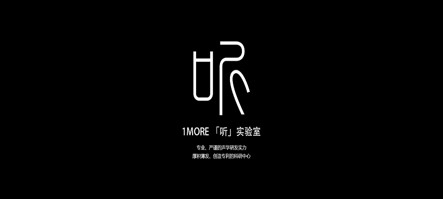
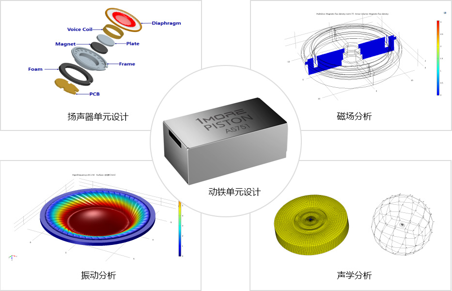

专业声学设备
拥有世界先进的专业声学设备，以实现长期核心声学技术的深耕，可自主研发和设计动圈、动铁喇叭单元，进行新型振膜材料、新型单元结构设计、拟真、测量、ANC主动降噪方案、无线蓝牙方案等项目研究。
大师云集 长期深耕自诞生之日起，「听」实验室联合了声学专家与格莱美音乐大师Luca Bignardi，展开了专业声学的宏伟蓝图：纳米材料喇叭单元、超薄喇叭单元、新振膜材料，数字主动噪声控制技术、麦克风阵列、智能听力保护及补偿技术开发、人头声学传递函数的快速建模 、3D录音和回放系统的开发等项目上投入心血。
专业声学的研发与设计。
设计目标
听感舒适感动 / 超低失真 / 左右对称 / 平滑的宽频响应 / 特定音量下的响度曲线
为年轻主流用户群而定制的调音方案
软件腔体测算 / 振膜动态监测 / 音质数据分析